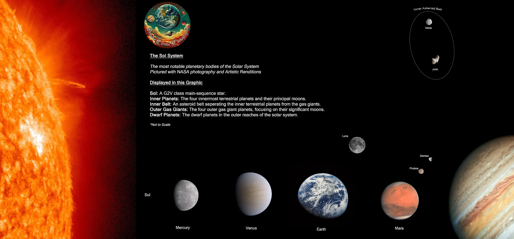
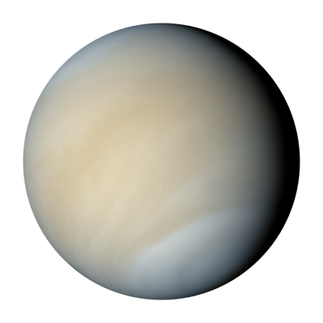

Sziklás bolygók
A bolygók, kisbolygók keletkezése, fejlődése
Bővebben: Bolygókeletkezés A bolygókeletkezés folyamata ma még nem teljesen tisztázott, csak
modellszámítások léteznek rá. Tudományos igényű (nem az isteni teremtést alapul vevő) keletkezési elméletek
a XVII-XVIII. században kezdtek megjelenni. Elsőként Descartes dolgozott ki keletkezésmodellt, az első
széles körben elfogadott elmélet pedig Kant és Laplace egymástól függetlenül kidolgozott elmélete volt,
amely szerint az alaktalan ősköd sűrűsödéséből született Nap egyenlítői síkjában a csillag keletkezésekor
leváló (a Szaturnusz mai gyűrűihez hasonló) gyűrűkből alakultak ki a bolygók. (Az elmélet azonban nem
tette volna lehetővé óriásbolygók születését, ahogy kisebb planetezimálokét sem, és nem adott magyarázatot
az impulzusmomentum egyenetlen eloszlására sem).
Egy másik, Thomas Chrowder Chamberlin által
kidolgozott
elmélet szerint egy Nap mellett elhaladó másik csillag gravitációs hatása szakított le a Napról anyagot,
amelyből a bolygórendszer kialakulhatott. (Ennek az elméletnek is számos hibája volt, mint például az,
hogy a leszakadt anyag inkább szétszóródott volna, mintsem objektumokká állt volna össze.) A Smidt-elmélet
szerint a Nap egy csillagközi anyagfelhőn áthaladva rántott magával anyagot, amelyből a bolygók
összeállhattak (igaz ennek a forgatókönyvnek gyakorlatilag nulla az esélye). A legvalószínűbb – a tudományos
közösség által napjainkban leginkább elfogadott, ám kísérletileg a Nap keletkezésmodelljéhez hasonlóan
szintén nem bizonyított – keletkezéstörténeti forgatókönyv szerint a bolygók kialakulása közvetlenül a Nap
születése után, a csillag körül kialakult protoplanetáris korongból indult el. A keringő anyag belső
súrlódása miatt már a protocsillag állapot végén megkezdődött egy akkréciós korong kialakulása a gyorsan
forgó csillag egyenlítői síkjában, a csillagkeletkezés során visszamaradt gáz- és poranyagból.
Először a
gázbolygók alakultak ki a Nap sugárzása által a rendszer külső részébe fújt gázból, nagyjából 2–3 millió év
alatt. A Naprendszer belső vidékein a gáz kifelé távozása miatt csak por maradt. A füstszemcsékhez hasonló
méretű porszemcsék összetapadásával csomósodások jöttek létre az akkréciós korongban, a csomók
hógolyó-effektusszerűen növekedtek és bolygócsírákká alakultak. A bolygócsírák folyamatos ütközések részesei
voltak, amelyekben egymáshoz tapadtak, és egyesek egyre nagyobbá nőttek a kisebb sebességű ütközések során.
A kezdeti időkben több száz 100–1000 kilométeres planetezimál jött létre, amelyek folyamatos ütközései
alakították ki a ma ismert bolygókat, a bolygók tisztára söpörték a pályájuk mentén az űrt. Az ütközések
energiája megolvasztotta a kialakuló bolygókat, amelyeken belül megindult a radioaktív fűtés is, ezzel még
tovább emelve a testek hőmérsékletét, az így teljesen olvadt anyag gömb alakba rendeződhetett a gravitáció
által. A kőzetbolygók keletkezése egy nagyságrenddel több idő alatt ment végbe, mint a gázbolygóké, néhány
tízmillió évet véve igénybe. A folyamat végén a magmaóceán teteje (a bolygók kérge) lehűlt, majd
megszilárdult. Ezt követően már csak a nagyobb becsapódások okozta kataklizmák és a kisebbek miatti erózió
zajlott. Az egymással keringési rezonanciában levő bolygók túlélték az ütközéseket, mások előbb-utóbb
megsemmisültek, beolvadtak valamelyik másik égitestbe. A belső Naprendszerben két hullámban söpört végig az
ütközések sorozata: a korai intenzív bombázás és a késői nagy bombázás során.
A korai bombázás 3,95
milliárd
évvel ezelőttig tartó folyamat volt, gyakorlatilag az ismert bolygók pályájának tisztára söprési folyamata
lehetett, amely egyre csökkenő sűrűségű becsapódásban nyilvánult meg. A késői bombázás pedig a 3,95–3,85
milliárd év közötti időszakban újra felerősödött – vélhetően a külső gázbolygók perturbációs hatásai miatt a
rendszer belseje felé küldött aszteroidák okozta – becsapódási hullám volt, ami egyben le is zárta a
bolygókeletkezés folyamatát, ettől kezdve nagymértékben csökkentek a nagy kozmikus karambolok a belső
Naprendszerben. A gázbolygók között nem ismert ilyen bombázási hullám, ám a rengeteg befogott holdjuk – mind
megannyi aszteroida – arra utal, hogy ebben a térségben is számos ütközés történhetett. A bolygók fejlődése
ezután különböző utakon haladt tovább. A legbelső bolygót például felperzselte a Nap, a napszél erodálta a
felszínét és ha volt egyáltalán, akkor elragadta a légkörét. Egyes feltételezések szerint a felszín nagy
részét magával ragadta egy planetezimállal történt ütközés, ennek bizonyítéka a többi bolygóhoz aránytalanul
nagy vasmag, amelyhez korábban vélhetően nagyobb térfogatú bolygótest tartozott. A második bolygón a nagy
vulkáni aktivitás miatt a légkörbe került gázok fékezhetetlen üvegházhatást indítottak be és ma rendkívül
magas nyomás és hőmérséklet jellemzi a vulkánosság szempontjából inaktív bolygót.
A harmadik bolygón
hatalmas kiterjedésű vízóceánok alakultak ki és egy óriási becsapódás nyomán a testéből kiszakadt és önálló
égitestté állt össze egy óriási hold. Emellett kialakult rajta az élet, egyedüliként a Naprendszerben. A
negyedik bolygó elvesztette légkörét és vízkészletének jelentős részét. Az ötödik bolygó össze sem állt
bolygóvá, mivel a hozzá legközelebb eső óriásbolygó gravitációs zavaró hatása nem engedte a planetezimálok
bolygóvá összeállását, így egy kisebb-nagyobb testekből álló, több ezer tagot számláló övezet maradt a
helyén. Az "igazi" ötödik bolygó a Naprendszer legnagyobb tagjává vált, hatalmas hidrogén- és héliumlégkört
gyűjtött magába és gravitációs hatásával mintegy pajzsot von a rendszer belső részei elé, eltérítve, vagy
befogva a befelé tartó üstökösmagokat, aszteroidákat. Gravitációja a legnagyobb számú holdat keringeti,
köztük a Naprendszer legnagyobb holdjaival. A hatodik bolygó ugyancsak gázokból hatalmasra hízott óriás,
amely egy holdját az árapály erőkkel darabokra tördelve látványos gyűrűrendszerrel övezi magát. A hetedik
bolygó a hidrogén és hélium mellé metánt is gyűjtött óriási légkörébe, és ennek is gyűrűk keringenek az
egyenlítői síkjában, ráadásul egy kozmikus ütközés „az oldalára fordította”. A legkülső gázbolygó szintén
metántartalmú légkörében hatalmas szelek fújnak. A bolygókon kívül más égitestek is kialakultak az akkréciós
korongból, a kisbolygók. Ezeknek az égitesteknek a fejlődéstörténete kissé eltér a bolygókétól, egész
pontosan a fejlődésük leállt egy bizonyos ponton. A Naprendszerben két különböző aszteroidamező kering, az
egyik a Mars és a Jupiter között, a másik a Neptunuszon túl, a Kuiper-övben. Korábban azt feltételezték,
hogy a Mars és a Jupiter közötti fő aszteroida-övben keringő kozmikus törmelék egy korábbi bolygó
felrobbanásából származik, azonban a modern számítások szerint ehhez kevés az ott található anyag tömege
(Holdunk tömegének 4%-a, vagy más összehasonlításban Földünk tömegének alig fél ezreléke). A legújabb
kutatások inkább azt állapították meg, hogy a Jupiter perturbációs hatása nem hagyta a bolygócsírák
összeállását bolygótestté. Valószínűleg ugyanez játszódott le a Kuiper-öv aszteroidái esetében, csak ott a
Neptunusz okozhatta az összeállást gátló gravitációs zavarást. A bolygók és kisbolygók jövője nagyban függ a
Nap működésének változásaitól. A legáltalánosabb nézet szerint csillagunk fősorozati léte végén akkorára
fújódik, hogy a Földet is bekebelezi. Egyes modellszámítások szerint a Föld pályája addigra kijjebb kerül,
ám a jelenlegi körülmények mindenképpen gyökeresen megváltoznak a felszínén. A Merkúr és a Vénusz
mindenképpen megsemmisül. A külső bolygók elvileg kívül maradnak a Nap felfúvódásának határán, ám a vörös
óriás fázis végén, amikor a Nap ledobja külső gázburkát, a leszakadó gázburok tágulása magával sodorhatja a
tömegük legnagyobb részét kitevő légkörüket. A kisbolygók pályája is megváltozik csillagunk tömegvesztése
miatt, és vélhetően valamelyik bolygóval vagy a Nappal ütköznek. Végül, amikor a Nap fehér törpeként létezik
tovább az univerzumban, a megmaradt bolygóroncsok tovább keringenek a csillagtetem körül.
Merkúr

A Merkúr a Naprendszer legbelső és legkisebb bolygója, a Nap körüli keringési ideje 88 nap. A Merkúr a
Földről nézve fényesnek látszik, magnitúdója −2,0 és 5,5 között változik, azonban nehéz észlelni, mert a
Földről nézve a Naptól mérhető legnagyobb szögtávolsága csak 28,3°. Reggel vagy este szürkületkor lehet
megfigyelni. A Merkúrt meglátogató két űreszköz közül az első a Mariner–10 volt, mely 1974–75-ben a bolygó
felszínének csupán 45%-át térképezte fel. A második a MESSENGER, amely további 30%-ot mutatott meg a bolygó
felszínéből, amikor 2008. január 14-én elrepült mellette. Ez az űreszköz 2008. október 6-án és 2009.
szeptember 29-én még kétszer elhaladt a bolygó mellett, 2011. március 19-én bolygó körüli pályára állt,
mintegy 200 kilométerre a felszíntől – adatokat gyűjt, azokat a Földre továbbítja, miután a maximális
magasságba került, 15 000 kilométerre a felszíntől. Ekkortól tovább tanulmányozza és feltérképezi az egész
égitestet.
A Merkúr sok tekintetben hasonlít a Holdra: felszínét számos kráter borítja, nincs
természetes
holdja, és nincs állandó légköre. Azonban a Holddal ellentétben nagy, vasat tartalmazó magja van, aminek
következtében rendelkezik mágneses mezővel, melynek erőssége a földinek körülbelül 1%-a. Magjának relatív
mérete miatt kivételesen nagy a bolygó sűrűsége. Felszíni hőmérséklete 90 és 700 K (-183 és 427 °C) között
változik, Ahol a Nap éppen merőlegesen éri a felszínt, ott van a legmelegebb, és a sarkokhoz közeli kráterek
mélyén mérik a leghidegebbet. A Merkúr megfigyeléséről szóló feljegyzések legalább az időszámításunk előtti
első ezredfordulóig nyúlnak vissza. A babiloniak a Nabu nevet adták neki, hírvivő istenük neve után. Az i.e
4. század előtt a görög csillagászok két bolygónak gondolták aszerint, hogy napkeltekor vagy napnyugtakor
volt látható. Előbbi az Apollón, utóbbi a Hermész nevet kapta. Az i.e 4. században felismerték, hogy a
két bolygó egy és ugyanaz, onnantól kezdve Herméssznek nevezték. A bolygó magyar neve a rómaiakig nyúlik
vissza, akik a bolygót Mercurius római istenről nevezték el, aki a görög Hermész római megfelelője. A Merkúr
asztronómiai jele a kör egy kereszt függőleges szárán, a kör tetején egy félkörrel (Unicode: ☿), ami Hermész
caduceusának stilizált változata.
Vénusz
A Vénusz a második bolygó a Naptól, keringési ideje 224,7 földi nap. Nevét Venusról, a szépség római
istennőjéről kapta. A Hold után a legfényesebb objektum az éjszakai égbolton, legnagyobb látszólagos
fényessége −4,6 magnitúdó. Maximális fényességénél még nappal is észrevehető. Mivel a Vénusz kering a Nap
körül és közelebb van hozzá, mint a Föld, ezért néhány hónapig a Naptól keletre, később néhány hónapig a
Naptól nyugatra látható, változó távolságra. A keringés mindkét szélső pontjának látszólagos távolsága a
Naptól, azaz a bolygó legnagyobb kitérése 47,8°, vagyis a Napot legfeljebb három órával követi, illetve
előzi meg az égen. A kalauzcsillagok közé tartozik, mivel segítette az embereket utazásaik során a
tájékozódásban. Emiatt nagyon kedvelt volt és szívesen adtak különféle hangzatos neveket neki, külön a
reggel látható és külön az esti Vénusz számára, mint például a Hajnalcsillag és Esti csillag nevet, amelyből
keletkezett a jól ismert Esthajnalcsillag elnevezés. Az ókori görögök a kettőt még két külön égitestnek
hitték, Heszperosz (napnyugati) és Foszforosz (fényhozó) néven ismerték. Magyar neveit főleg a szabad ég
alatt élő pásztoroktól kaphatta. A bolygó „csillag” elnevezése természetesen nem csillagászati értelemben,
hanem csak általános, népies szóhasználatban állja meg a helyét. Bővebben: Népi csillagnevek listája
A Vénusz a Naprendszer egyetlen olyan bolygója, mely női alakról kapta a nevét. Ezen kívül csak
három
törpebolygó – a Ceres, az Eris és a Haumea visel női nevet. Föld-típusú bolygónak számít, a Föld
testvérbolygójának is hívják, mivel a két bolygónak hasonló a mérete, a gravitációs ereje és a tömege. Nagy
fényvisszaverő képességű, kénsav tartalmú felhőréteg takarja el a fény elől a felszínt. Ez sokáig olyan
találgatásoknak adott alapot, melyekre a planetológia csak a 20. század folyamán tudta megadni a választ. A
kőzetbolygók közül a Vénusznak van a legsűrűbb légköre, amelyet főleg szén-dioxid alkot. A légköri nyomás a
földinek 92-szerese. Hiányzik a szén körforgása, amely biztosítaná, hogy a felszabadult szén visszakerüljön
a sziklákba és más felszíni képződményekbe, s a szerves élet hiánya miatt nem jöhet létre ezt elnyelő
biomassza sem. Olyan meleg van a felszínen, hogy az egyes feltételezések szerint a felszínen valaha
létezett, a földihez hasonló óceánok régen elpárologtak. A helyén csak sivatagszerű síkságok és
szikladarabok maradtak. A leginkább elfogadott elmélet szerint az elpárolgott víz kivált, és a bolygó
mágneses terének hiányában a napszél szétterítette az űrben a hidrogénrészecskéket. A felszínt 1990-94
között térképezte fel a Magellan űrszonda.
A bolygó felszíne kiterjedt vulkanizmus nyomait mutatja
és a
légkörben megtalálható kén több szakértő véleménye szerint napjainkban is aktív vulkanikus folyamatokra
utal. A kevés becsapódási kráter arra utal, hogy a felszín fiatal, legfeljebb félmilliárd éves. A legutóbbi
időkig talány volt, miért nem kapcsolódik egyik látható kalderához sem lávaömlés nyoma. 2010-ben az európai
Venus Express VIRTIS infravörös képalkotó spektrométerének segítségével több vulkán környékén is felfedeztek
fiatal, 2,5 millió évesnél fiatalabb lávafolyásokat, azaz a felszín geológiai értelemben ma is aktív. A
bolygón nincs lemeztektonikára utaló jel, ami abból fakadhat, hogy kérge túl kemény ahhoz, hogy szubdukció
menjen végbe.
Föld

A Föld (görögül: Γαῖα – Gaia, latinul: Terra vagy Tellus) a Naptól számított harmadik bolygó a
Naprendszerben, ahol a legnagyobb átmérőjű, tömegű és sűrűségű Föld-típusú bolygó. Több millió faj, köztük
az ember élőhelye is. A Föld a világegyetem egyetlen olyan bolygója, amelyről tudjuk, hogy életet hordoz.
Jelenlegi ismereteink szerint 4,44–4,54 milliárd éve alakult ki, és a felszínén mintegy egy milliárd év
múlva az élet is megjelent. Azóta a bioszféra jelentősen megváltoztatta az atmoszférát, és más, biotikus
összetevőit. Ezzel lehetőség nyílt az aerob organizmusok osztódásos szaporodására, és létrejött az
ózonréteg, amely megszűri a Nap felől érkező ultraibolya sugárzást.
A Föld felszínét a Föld mágneses
mezője
védi a nagyenergiájú kozmikus sugárzástól. A Naprendszer külső körülményei a várakozások szerint még
mintegy 1,5 milliárd évig támogatják az élet jelenlétét, de ezután a mind fényesebbé váló Nap el fogja
tüntetni a bioszférát. A földkéreg több különálló részre, tektonikai lemezekre töredezett, és ezek az elmúlt
évmilliók során, és jelenleg is folyamatosan mozognak egymáshoz képest. A felszín nagyjából 71 százalékát
sós vizű óceánok, a fennmaradó területet kontinensek és szigetek foglalják el. Nem tudunk más olyan
bolygóról, aminek felszínén folyékony víz található, márpedig az a földi élet elengedhetetlen feltétele. A
Marson valaha volt víz, de ma már csak legfeljebb nyomokban, jéggé fagyva fordulhat elő.
A Föld
belseje
aktív maradt. Részei a Goldschmidt-modell szerint: a viszonylag szilárd földköpeny, a folyékony, a mágneses
térért felelős külső mag és a szilárd, vas- (nikkel-)szulfidosnak tekintett belső mag. A Föld pályája a Nap
körül (a méretek nem arányosak) A Föld (elvileg) minden testtel gravitációs kapcsolatban áll a világűrben.
Ezek közül gyakorlatilag legjelentősebb a Nap és a Hold gravitációs hatása. Amíg a Föld megkerüli a Napot,
addig nagyjából 366,26-szor megfordul saját tengelye körül. Ez az időszak egy sziderikus év, ami nagyjából
365,26 sziderikus napig tart. A Föld tengelyének ferdesége a keringési síkra bocsátott merőlegeshez képest
23,4°. Ennek következményei az évszakok.
A Föld egyetlen természetes holdja, a feltételezett 4,53
milliárd
éve létrejött Hold vonzása alakította ki az árapályt, amely egyensúlyban tartja a tengelyferdeséget és
valamelyest lassítja a bolygó forgását. Az óceánok kialakulásában egyes elméletek szerint a bolygó
történetének korai szakaszában nagy szerepet játszott egy üstököseső. Később a felszínt kisrészt kisbolygók
becsapódásai alakították még, azonban ezek szerepe elhanyagolható a tektonika és a lepusztulás mellett. A
bolygó egész felszínét belakó emberiség az ásványkincseket és az élőlényeket is hasznosítja. A nagyjából
200 szuverén állam kapcsolatainak fő formái a diplomácia, az utazás, a kereskedelem és a hadi tevékenységek.
Az emberek sokféleképpen képzelték el a Föld jellegét és kialakulását az isteni megszemélyesítéstől a lapos
Föld elméletén át napjaink integrált, tudományos világképéig. Ember először 1961-ben hagyta el bolygónkat,
amikor Jurij Gagarin fölrepült a világűrbe.
Mars

A Mars a Naptól számított negyedik bolygó a Naprendszerben. Szabad szemmel is könnyedén látható az éjszakai
égbolton. A római hadistenről nevezték el, de gyakran hívják „vörös bolygónak” is színe miatt, amit a Mars
felszínét meghatározó vas-oxid okoz. A Mars a harmadik legnagyobb kőzetbolygó a Naprendszerben, számos
rendkívüli felszíni képződménnyel. Két természetes holdja van, a Phobos és a Deimos, mindkettő kicsi és
szabálytalan alakú, valószínűleg befogott kisbolygók. Továbbá a 2000-es évek elejétől három mesterséges hold
kíséri útján: Mars Odyssey, Mars Express és a Mars Reconnaissance Orbiter.
A Mars nagy hatást
gyakorol az emberi képzeletre, mivel egy hibás fordítást követően (természetes csatorna → mesterséges
csatorna) elterjedt, hogy a Marson idegen civilizáció létezik. Sok történet született a marslakókról.
Legismertebb talán H. G. Wells: Világok harca című irodalmi műve. Jelen tudásunk szerint amennyiben van élet
a Marson, az legfeljebb egyszerűbb élőlényekre, mikroorganizmusokra korlátozódik.
Fizikai
tulajdonságai Mivel a Mars feleakkora átmérőjű, mint a Föld, ezért felszíne negyede, a tömege kb. nyolcada a
Földének. A felszín vizsgálata alapján a marsi kőzettörmelék nagy valószínűséggel alkalmas az életre,
növények termesztésére: az Antarktika szárazabb völgyeiben található talajaihoz hasonló tulajdonságokat
mutat. Lúgos kémhatású (az adott elemzés 8–9 közötti pH-értékeket mutatott ki), kimutatható magnézium,
nátrium és kálium, az élethez szükséges tápanyagokat és vegyületeket is találtak. Fontos különbség, hogy nem
tartalmaz szerves anyagot (humuszt) mely kialakulása mikrobiális tevékenységhez kötött, ami
elengedhetetlenek a tápanyagok körforgásához és a magasabb rendű élet kialakulásához.Mai tudásunk szerint
egy bolygón akkor alakulhat ki élet, ha ott víz is található, folyadék formájában. Ehhez az kell, hogy a
bolygó a lakhatósági zónában legyen, tehát a Naptól annyira távol, hogy a víz ne párologjon el, de ne is
fagyjon meg. Ez a mi Naprendszerünkben azt a zónát jelenti, ami a Vénuszon túl és a Mars fél nagytengelye
között van. A perihelion idején (mikor a bolygó a legközelebb van a Naphoz) a Mars ebben a zónában van, de a
vékony atmoszféra meggátolja, hogy víz nagy területeken jöjjön létre.
A legtöbb bizonyíték azt
sugallja, hogy a Mars felszínén lévő víz túl sós és savas ahhoz, hogy élet alakuljon ki benne. A
magnetoszféra hiánya és a rendkívül vékony atmoszféra nagy kihívás az élettel szemben; a bolygónak kevés a
hőátvitele a felszínén, a napszél bombázása és az atmoszferikus nyomás alacsony volta miatt a víz nem képes
folyékony halmazállapotban maradni. A Mars közel (vagy teljesen) halott geológiailag; a vulkanikus
tevékenység vége látszólag megállította a vegyi anyagok és ásványi anyagok újrahasznosítását a bolygó
felszíne és belső területe között.